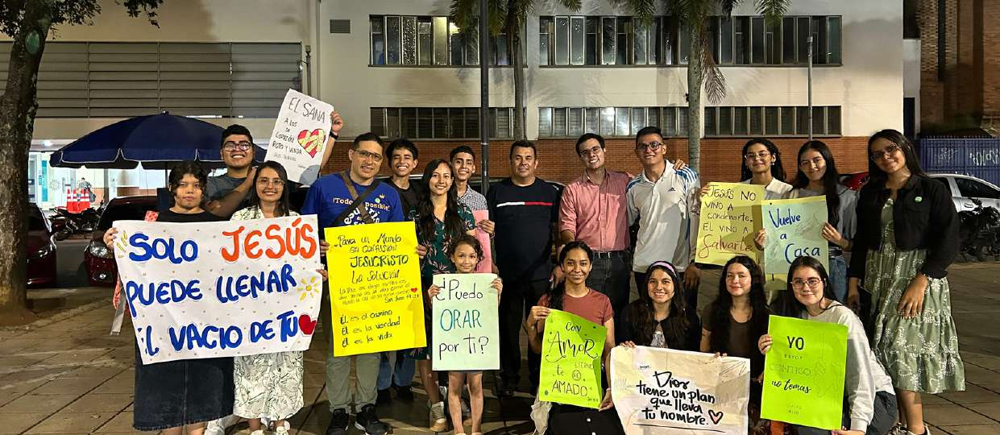
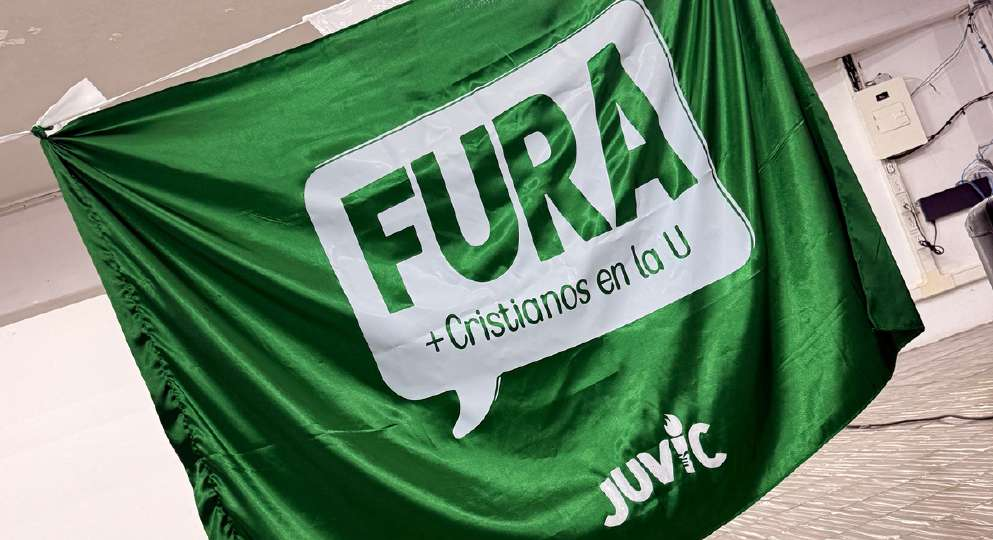

FURA acompaña a jóvenes cristianos dentro de sus universidades para compartir el amor de Jesucristo con cada estudiante que cruza esas puertas, sin importar su historia, su carrera o sus creencias.
Creemos que las universidades son uno de los campos de misión más importantes de nuestro tiempo. FURA nació con un propósito claro: compartir el amor y la esperanza de Jesucristo con cada joven, y acompañar al estudiante cristiano que empieza a sentir el peso de las presiones académicas, filosóficas y morales de su carrera.
Cómo empezó todo
Como jóvenes, Dios nos ha dotado de fuerza y de pasión para el servicio y la labor. Es clave impulsar al joven a invertir sus energías y su ánimo compartiendo el mensaje de salvación.
Proverbios 20:29FURA nace en las universidades, en los centros de pensamiento y formación modernos, donde se forman los futuros profesionales que llevarán en alto el evangelio a muchas más personas.
Restaurando a muchos jóvenes que, al ingresar a la universidad, pierden la relación con Dios; rescatando a quienes se han perdido; y renovando las fuerzas de los jóvenes cristianos.
Gálatas 6:1 · Lucas 19:10 · Romanos 12:2Creemos en la salvación. No queremos llevar a los jóvenes solo un buen rato o una solución momentánea: queremos predicarles sobre la vida eterna y acercarlos a Dios.
Lo que comenzó en Bucaramanga hoy trasciende fronteras. Este es el mapa actual de FURA.

Adoración, estudio de la Palabra, evangelismo en la U, obra social y encuentros en línea: así acompañamos semana a semana a los estudiantes cristianos.
Ver todos los momentosPara 2026, FURA proyecta consolidar su presencia en las universidades actuales y abrir nuevos grupos en ciudades estratégicas como Bogotá, Cali y Medellín, fortaleciendo la obra social en hospitales, hogares infantiles, fundaciones, colegios y asilos.
Sé parte de esta visión